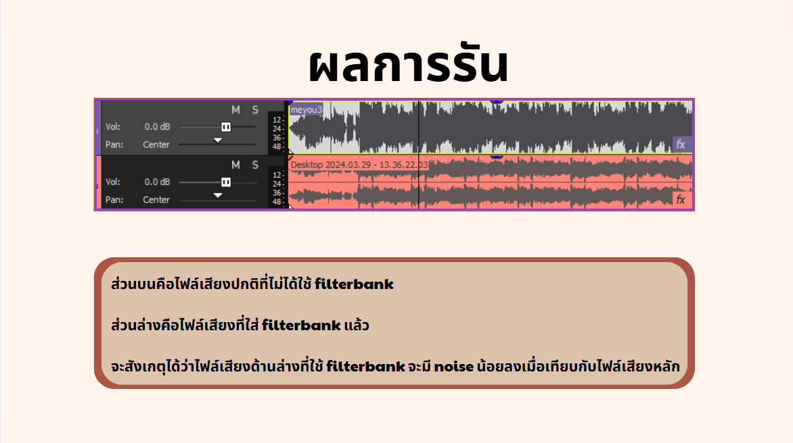
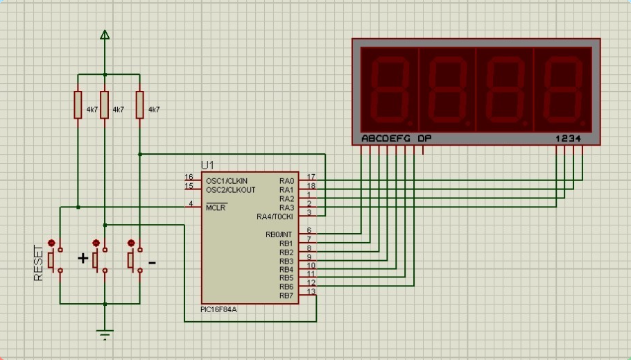

PROJECT ที่เคยทำ
1
การปรับเสียงให้เหมาะสมกับการฟังด้วย filter bank
- เป็นโปรเจคที่ทำขึ้นในวิชา 618362 DIGITAL SIGNAL PROCESSING
- Filter bank เป็นเทคนิคหรือเครื่องมือทางวิศวกรรมด้านสัญญาณดิจิทัลหรือสัญญาณเสียง
- เครื่องมือนี้มักถูกใช้ในการปรับแต่งสัญญาณเพื่อให้เหมาะสมกับการใช้งานหรือการประมวลผลที่ต้องการ
- เช่น การลดเสียงรบกวนหรือการเน้นส่วนของเสียงที่สนใจ การปรับแต่งเสียงในระบบเสียงเพลง เป็นต้น
YouTube

2
SCORE BOARD PROJECT with pic16f84a assembly
- เป็นโปรเจคที่ทำขึ้นในวิชา 618354 COMPUTER AND EMBEDDED SYSTEMS
- เป็นโปรเจคที่ทำโปรแกรมด้วยการสร้างสกอร์บอร์ดขึ้นมาด้วยการเขียนภาษาassembly
- ซึ่งมีการใช้ pic ตัว16f84a ในการเขียนและทำการสร้างวงจรจำลองขึ้นมาด้วยโปรแกรม Proteus ver.7
YouTube
